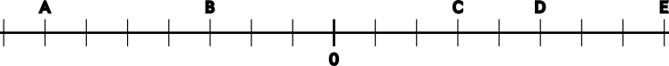

Los números negativos son aquellos que están por debajo de cero en la recta numérica. Representan cantidades como deudas o temperaturas bajo cero. Se denotan con el signo menos (-) delante del número.
1 Expresa estos enunciados con un número positivo, negativo o cero:
2 Indica el significado de los números negativos en cada una de las situaciones:
El valor absoluto de un número representa su distancia al cero en la recta numérica, independientemente de si es positivo o negativo. Se denota por barras, por ejemplo, \( |−5| = 5 \).
3 Calcula el valor absoluto de los siguientes números:
El opuesto de un número es aquel que tiene el mismo valor numérico pero el signo contrario. Por ejemplo, el opuesto de \(−3\) es \(3\), y el opuesto de \(4\) es \(−4\).
4 Calcula el opuesto de los siguientes números:
Los números enteros pueden representarse en una recta numérica donde los valores a la derecha del cero son positivos y los de la izquierda son negativos.
5 Representa en la recta numérica los siguientes números:
6 Indica qué números están representados en la siguiente recta:
Para comparar números enteros, consideramos su posición en la recta numérica: los números más a la derecha son mayores, y los que están más a la izquierda son menores.
7 Ordena de menor a mayor las siguientes series de números enteros:
Al sumar números enteros, si tienen el mismo signo, sumamos sus valores absolutos y mantenemos el signo. Si tienen signos opuestos, restamos el menor valor absoluto del mayor y usamos el signo del mayor.
8 Realiza las siguientes sumas y restas:
9 Realiza las siguientes operaciones agrupando primero los números con el mismo signo:
10 Realiza las siguientes operaciones paso a paso:
Cuando multiplicamos o dividimos dos números con el mismo signo, el resultado es positivo. Si tienen signos opuestos, el resultado es negativo.
11 Calcula las siguientes multiplicaciones y divisiones de números enteros:
12 Resuelve las siguientes operaciones:
Las potencias de números enteros siguen ciertas reglas. Si el exponente es par, el resultado siempre es positivo; si es impar, el resultado tiene el mismo signo que la base.
13 Indica el signo de las siguientes potencias:
Para resolver operaciones combinadas, es importante seguir la jerarquía de operaciones: primero se resuelven las potencias y raíces, luego multiplicaciones y divisiones, y finalmente sumas y restas.
14 Resuelve las siguientes operaciones combinadas con números enteros: